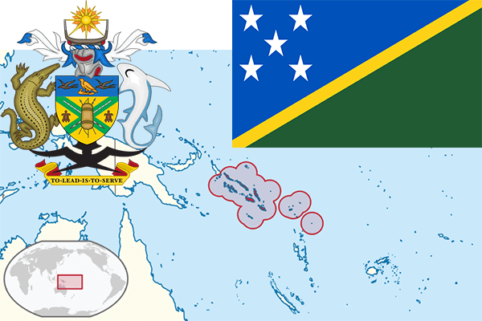

To`liq nomi: Solomon Orollari
Region: Tinch okeani janubi-g’arbi
Qonunchilik shakli: Monarxiya
Mustaqillik kuni: 7 iyul 1978-yil
Poytaxt: Xoniara
Maydoni: 28,450 km²
Chegaradosh davlatlari: Yo’q
Aholisi: 599,419 (2016-yil)
Aholi zichligi: 18.1/km2
Aholining o`rtacha yoshi: 68,14 yil
Rasmiy tili: Ingliz tili
Dini: Xristian
Pul birligi: Solomon orollari dollari
Telefon prefiksi: +677
Internet domen: .sb
Xalqaro tashkilotlarga a`zoligi: BMT
Dengiz va okeanlarga chiqishi: Tinch okeani
YIM: Butun: $840 mil (2011-yil) Jon boshiga: $1,553
Yirik shaharlari: Xoniara